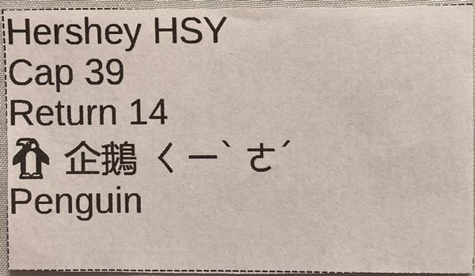
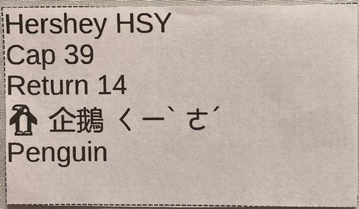

Example 2: photo of another bitsycard:

And now here are some downloads for you to download and cut out and draw/write yourself to create your own bitsycards:
Download free PDF file Bitsycard template
Example 2: photo of another bitsycard:

And now here are some downloads for you to download and cut out and draw/write yourself to create your own bitsycards:
Download free PDF file Bitsycard template  Download free ODS file Bitsycard template
Download free ODS file Bitsycard template  current best place for news now on bitsycard content is here:
https://lemonmama.com
current best place for news now on bitsycard content is here:
https://lemonmama.com